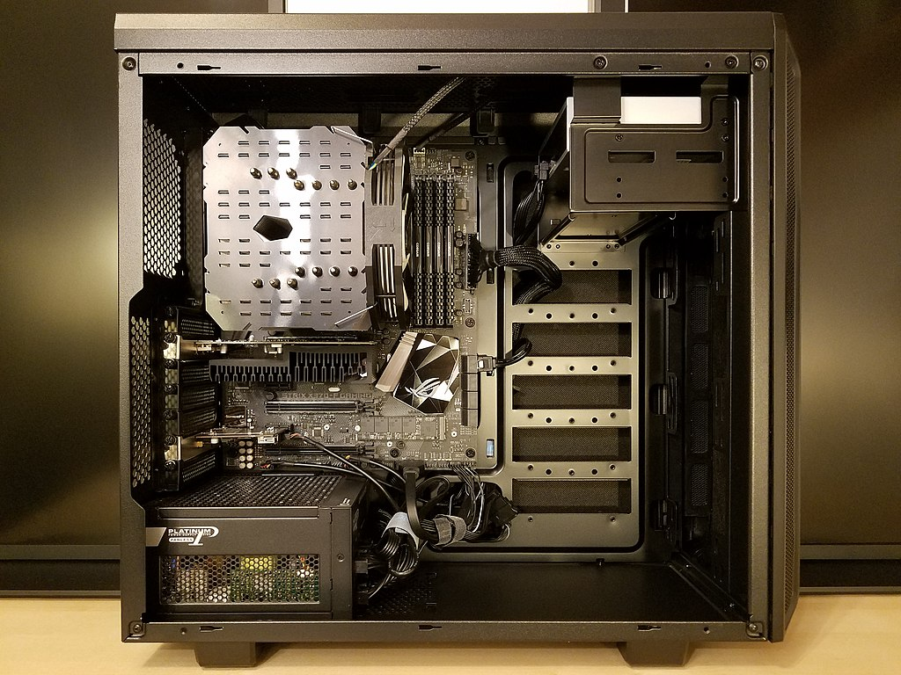

A computer case, also known as a computer chassis, tower, system unit, or cabinet, is the enclosure that contains most of the components of a personal computer (usually excluding the display, keyboard, and mouse).
Cases are usually constructed from steel (often SECC—steel, electrogalvanized, cold-rolled, coil), aluminium and plastic. Other materials such as glass, wood, acrylic and even Lego bricks have appeared in home-built cases.
Layout
Computer cases usually include sheet metal enclosures for a power supply unit and drive bays, as well as a rear panel that can accommodate peripheral connectors protruding from the motherboard and expansion slots. Most cases also have a power button or switch, a reset button, and LEDs to indicate power, hard drive activity, and network activity in some models. Some cases include built-in I/O ports (such as USB and headphone ports) on the front of the case. Such a case will also (normally) include the wires needed to connect these ports, switches, and indicators to the motherboard.

Appearance
ase modding is the artistic styling of computer cases, often to draw attention to the use of advanced or unusual components. Since the early 2000s, some cases have included clear side panels or acrylic windows so that users can look inside while it is operating. Modded cases may also include colored internal lighting, custom paint, or liquid cooling systems. Some hobbyists build custom cases from raw materials like aluminum, steel, styrofoam, acrylic, or wood.
Major component locations
The motherboard is usually screwed to the case along its largest face, which could be the bottom or the side of the case depending on the
form factor and orientation.
Form factors such as ATX provide a back panel with cut-out holes to expose I/O ports provided by integrated peripherals, as well as expansion slots which may optionally expose additional ports provided by expansion cards. Many larger ATX cases can also be used with motherboards of other form factors.
The power supply unit mounting point differs from case to case, but the most commonly used locations (both at the rear of the case) and their benefits/disadvantages
History of RAM
The first form of RAM came about in 1947 with the use of the Williams tube. It utilized a CRT (cathode ray tube); the data was stored on the face as electrically charged spots.The second widely used form of RAM was magnetic-core memory, invented in 1947. Frederick Viehe is credited with much of the work, having filed for several patents relating to the design. Magnetic-core memory works through the use of tiny metal rings and wires connecting to each ring. One bit of data could be stored per ring and accessed at any time.However, RAM, as we know it today, as solid-state memory, was first invented in 1968 by Robert Dennard. Known specifically as dynamic random-access memory, or DRAM, transistors were used to store bits of data.